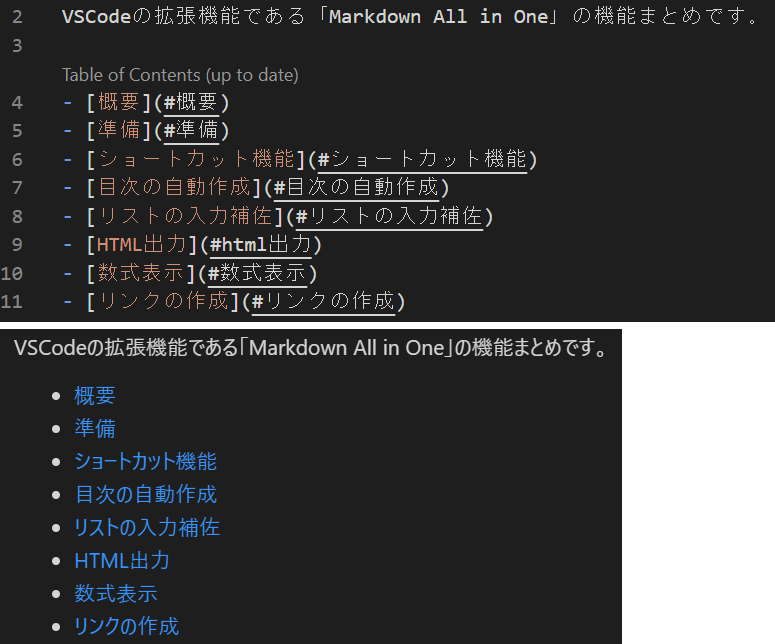

2021/08/30
VSCodeの拡張機能「Markdown All in One」を使う
VSCodeでMarkDownを書くのに、拡張機能「Markdown All in One」を導入すると便利です。
Markdownの記法メモもまとめてみました。
MarkDown記法のメモ
ショートカット機能
| キーボード操作 | 機能 |
|---|---|
| Ctr+B | 太字 (**) |
| Ctr+I | イタリック(*) |
| Ctr+Shift+] | 見出し(#)、実行ごとに#が増える |
| Ctr+Shift+[ | 見出し(#)、実行ごと#が減る |
| Ctr+M | 数式挿入($) |
| Alt+C | チェックボックスのON（[x]）、もう一度押すと解除 |
| Alt+S | 取り消し(~~) |
| Alt+Shift+F | 表の表記のフォーマット整形 |
以下はもともとVSCodeに入っており便利なショートカット
| キーボード操作 | 機能 |
|---|---|
| Ctr+K → v | サイドにプレビュー表示 |
| Ctr+shift+v | タブにプレビュー表示 |
目次の自動作成
見出し(#)の目次を自動で作成してくれます。
- 自動作成：Ctr+Shift+p → Markdown All in One: Create Table of Contents
- 更新 ：Ctr+Shift+p → Markdown All in One: Update Table of Contents
↓こんな感じです。

また、見出しに自動で番号を振ってくれます。
- 番号追加：Ctr+Shift+p → MarkDown All in One: Add/Update section numbers
- 番号削除：Ctr+Shift+p → MarkDown All in One: Remove section numbers
↓こんな感じです。

目次に入れたくない見出しがある場合は、見出しの前の行に「<!-- omit in toc -->」を追加します。
リストの入力補佐
- や1. などのリストを作成しているときに、行追加時に自動でリストが追加されます。
また、tabでインデントされます。
地味に便利なやつ。
HTML出力
現在開いているMarkDownファイルをHTMLへ変換できます。
Ctr+Shift+p → Markdown All in One: Print current document to HTML
リンクの作成
HPなどのアドレスをコピーした状態で、テキストを選択してCtr+Vすると、リンクを自動作成してくれます。